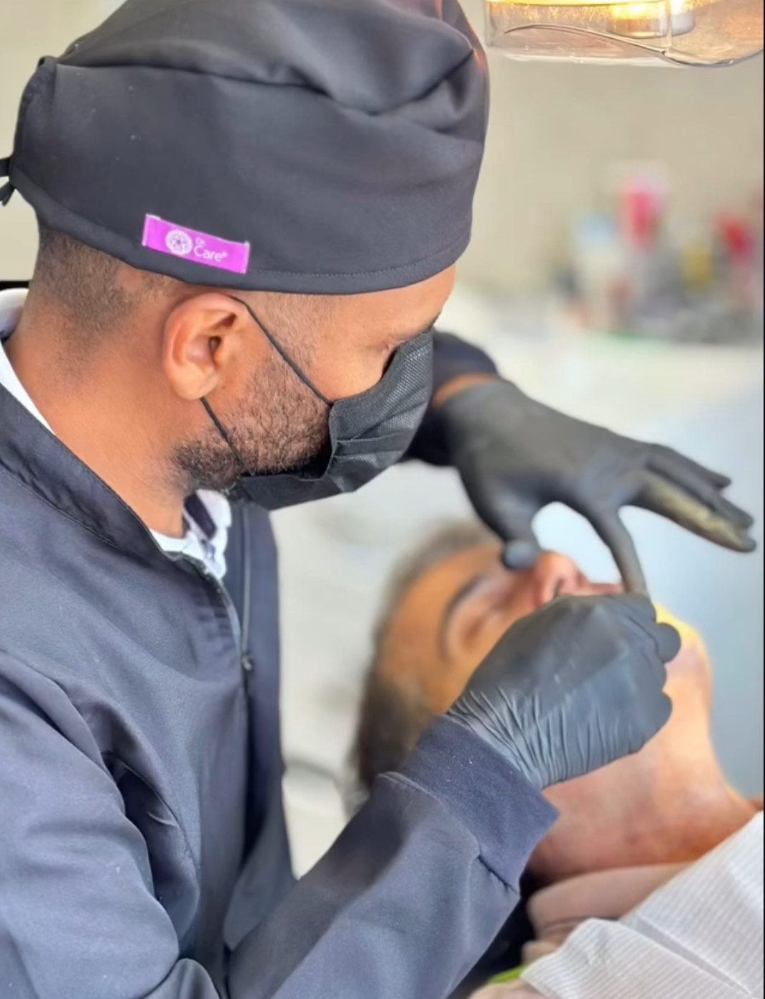

Reabilitação Oral
Implantes dentários: Substituem dentes ausentes, oferecendo uma base sólida para próteses fixas ou removíveis.
Próteses dentárias: Podem ser fixas ou removíveis, restaurando dentes faltantes ou danificados.
Restaurações dentárias: Tratamento de cáries, usando materiais como resinas compostas ou amálgama para restaurar dentes danificados.
Tratamento de canal: Quando a polpa do dente está comprometida, evitando a perda do dente.Você sofre com a falta de um ou mais dentes?
Seja através de próteses, implantes ou coroas, seu sorriso merece ser fixo e completo! Um sorriso completo vai muito além da estética.
Além disso, temos também a opção da prótese protocolo que transforma completamente o sorriso de uma única vez!
SAIBA MAIS